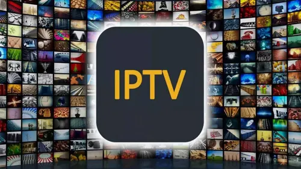
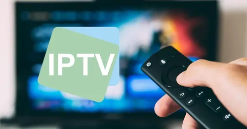

IPTV Play: Assista Onde Quiser - Conexão IPTV: TV ao Vivo e Online
Assista seus canais favoritos com qualidade, praticidade e segurança.
Experimente agora e tenha acesso a uma programação variada e de qualidade.


Experimente agora e tenha acesso a uma programação variada e de qualidade.
Acesso a uma ampla gama de canais nacionais e internacionais, incluindo esportes, filmes, séries, notícias e muito mais.
Desfrute de transmissões em alta definição (HD) e até 4K.
Grave seus programas favoritos e assista quando quiser.
Navegação fácil e rápida para encontrar seus canais e programas favoritos.
Equipe dedicada para ajudar com qualquer dúvida ou problema.
Assista em TVs, smartphones, tablets e computadores.